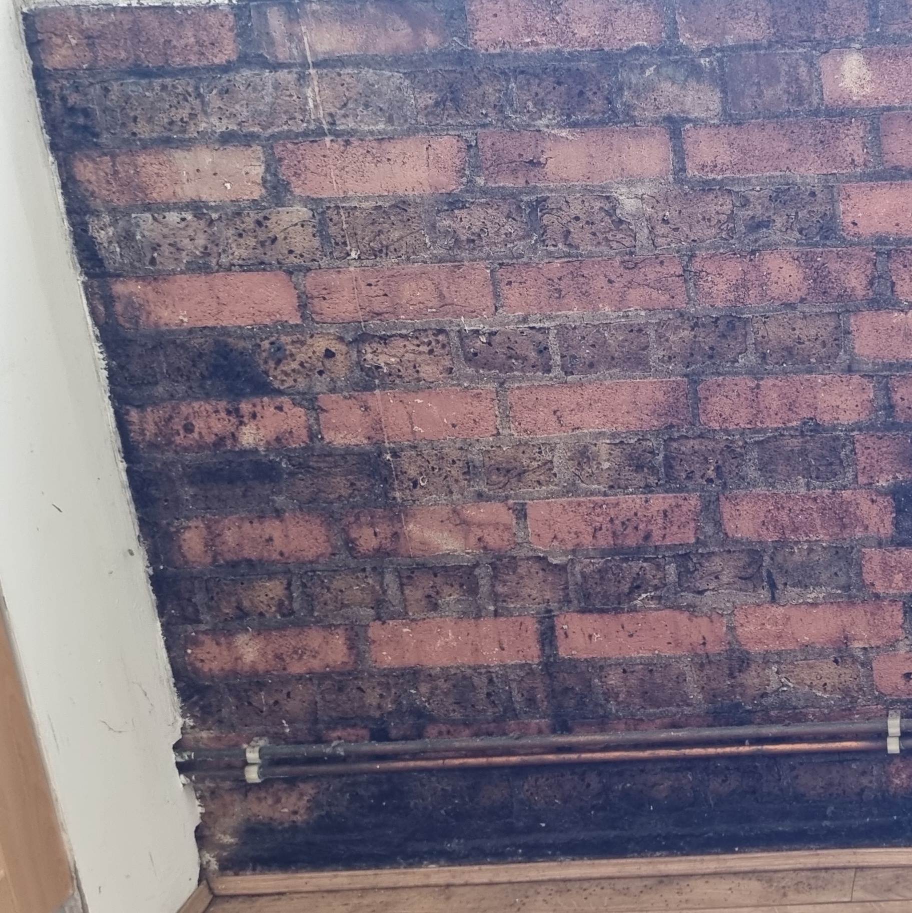
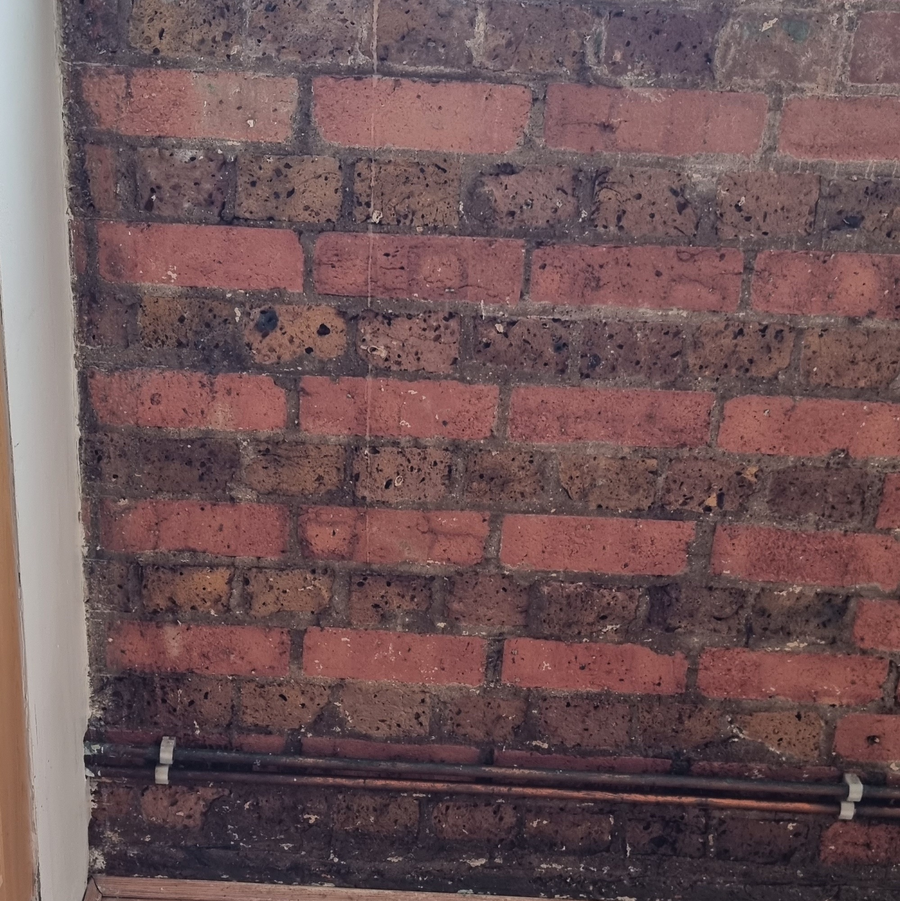
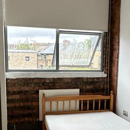
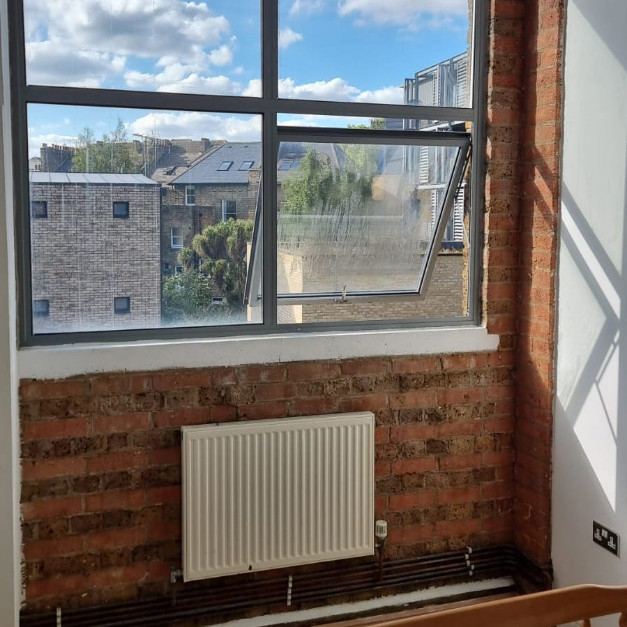
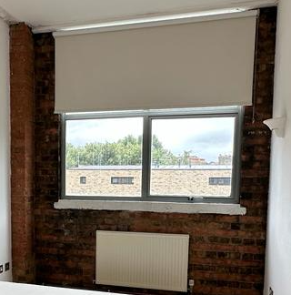
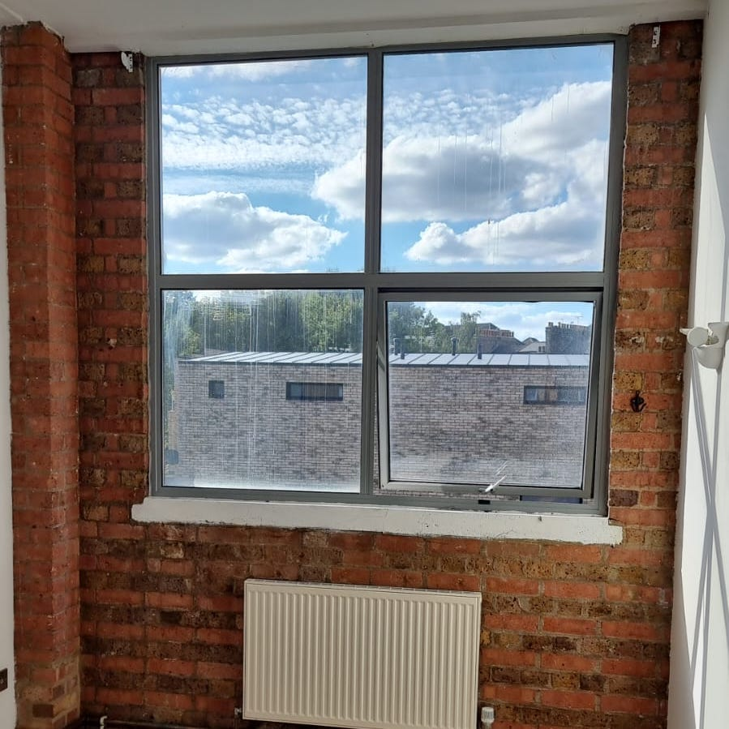

Family-run
Hertfordshire · Essex · Cambridgeshire
Mon–Fri, 8:00–17:30
Our work
Before and after photos from real jobs across Hertfordshire, Essex and Cambridgeshire.
Before and after photos from real jobs across Hertfordshire, Essex and Cambridgeshire.







